|
|
|
plants
text index | photo
index
|
| coastal plants |
| Tembusu Fagraea fragrans Family Gentianaceae/Loganiaceae updated Nov 10 Where seen? This beautiful stately tree is commonly planted in our parks and road sides. In the wild, they were found in open and swampy lowlands throughout Malaya, most commonly to the south. It was also known as F. cohinchinensis. According to the NParks website, it is "highly robust and can grow even in poorly drained, clayey soils". Features: A tall tree (30-40m), older trees have typical U-shaped angular branches that stick out horizontally before making a sharp turn to grow vertically. The bark is typically deeply fissured, which Corners describes as "rugged". Leaves (5-8cm long) oval with pointed tips. Flowers (2cm across) creamy white trumpet-shaped, appears in clusters and are strongly fragrant especially in the early morning and late evening. They turn yellow with age. The fruits are round berries (about 1cm) with lots of tiny seeds. Initially green, turning orange then red, they can take more than 3 months to ripen. Ripe fruits are eaten by bats and birds which disperse the seeds. Corners describes how "flying foxes come to gorge upon the fruits at night". He says "the yearly fruiting of the Tembusu is one of the marvels of local natural history. The flying foxes arrive from far and wide, flapping across the evening sky from islands to the south, from the mangroves of the mainland, and even from the coast of Sumatra. For two or three weeks they revel nightly. At other times, the flying foxes are scarcely to be seen." Alas, flying foxes are no longer found in Singapore. Corners adds that the berries are too bitter to be relished by other beasts. A slow growing, long-lived (more than 100 years) hardy tree that is quite resistant to pests and diseases. Corners says "in all its activities, the tree is leisurely", slow to flower, put out new leaves and even describes it as "lethargic". Human uses: The timber is extremely durable and resistant to termite attacks. Thus is it used for heavy duty construction such as railroads, bridges, boats and wharves as well as for flooring, panelling, furniture. According to Burkill, the Malay metaphor for a hard heart compares it to the Tembusu. In Singapore, huge wooden chopping boards used by hawkers to chop up chicken and meat are often made of Tembusu timber. Heritage Trees: There are twelve Tembusu trees with Heritage Tree status. The ones near the shores include at St John's Island (Blk 15 Prison Gate) with a girth of 4.3m and height 25m; at St John's Island (Blk 5 & 8, beside Neem Tree) with a girth of 4.5m and height 25m, and at Sentosa (beside IOS) with a girth of 4.6m and height 27m. The Tembusu tree at the Singapore Botanic Gardens is reportedly more than 150 years old and a photograph of it is reproduced on the back of the ‘Portrait’ series $5 note. |
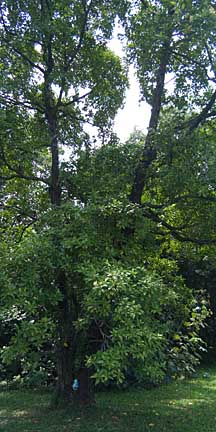 Planted next to Changi Creek. Changi, Apr 09 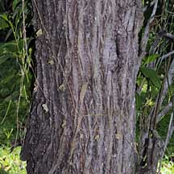 |
|
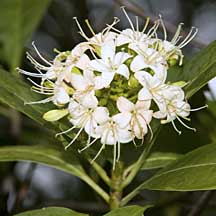 Pasir Ris Park, May 11 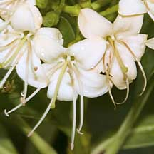 |
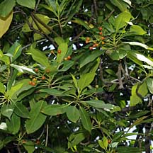 Changi, Apr 09 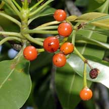 |
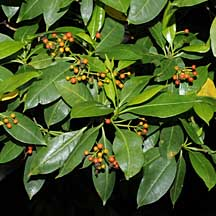 Planted in the Park 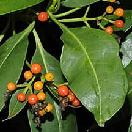 Pasir Ris, Sep 09 |
|
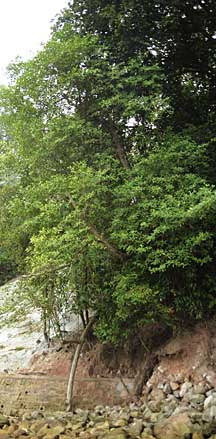 Growing wild on a natural cliff. St. John's Island, Aug 09 |
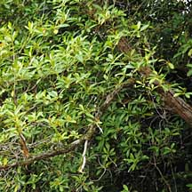 St. John's Island, Aug 09 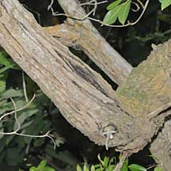 |
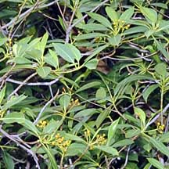 St. John's Island, Aug 09 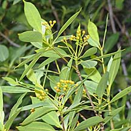 |
|
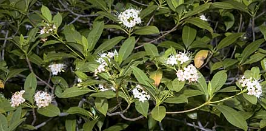 Pasir Ris Park, May 11 |
||
|
Links
References
|
|
|